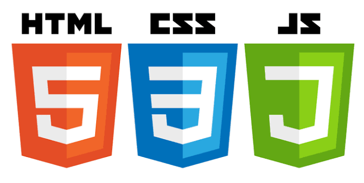
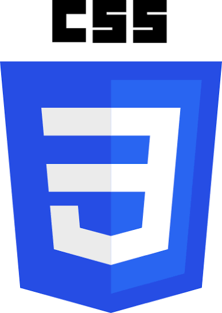

Taller Web + Clubes TED-Ed
Dario Difranco
"Las ideas es el primer paso antes de hacer"
Frase que me representa · 4° año

Taller Web + Clubes TED-Ed
"Las ideas es el primer paso antes de hacer"
Frase que me representa · 4° año
Los temas que me movilizan son:
HTML se utiliza para crear la estructura y el contenido de una página web, como títulos, párrafos, imágenes, enlaces, listas y botones.

CSS se utiliza para diseñar y mejorar la apariencia de una página web, cambiando los colores, tamaños, tipos de letra, fondos, márgenes y la distribución de los elementos.
JavaScript (JS) se utiliza para agregar interactividad y funciones a una página web. Permite que los botones respondan al hacer clic, que aparezcan mensajes y que el contenido cambie sin recargar la página.
Las computadoras son dispositivos electrónicos que permiten procesar información, realizar tareas, crear programas y resolver problemas.
La innovación tecnológica consiste en crear o mejorar herramientas, dispositivos y sistemas para facilitar las actividades de las personas y resolver problemas cotidianos.
La robótica combina la programación, la electrónica y la mecánica para diseñar máquinas capaces de realizar tareas automáticamente o con ayuda humana.
La Inteligencia Artificial (IA) es una tecnología que permite a las computadoras realizar tareas como reconocer imágenes, comprender textos, responder preguntas y encontrar patrones en la información.
La IA se utiliza en la educación, la medicina, los videojuegos, los asistentes virtuales y muchas otras áreas. Puede ayudar a aprender, organizar información y resolver diferentes problemas.
En el futuro, la IA puede ayudar a desarrollar nuevas tecnologías, mejorar los servicios y automatizar tareas. Es importante utilizarla de manera responsable, cuidar la privacidad y verificar la información que proporciona.